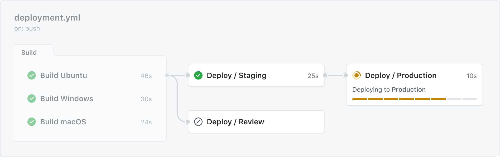

Learn how to avoid duplication when creating a workflow.
Rather than copying and pasting from one workflow to another, you can make workflows reusable. You and anyone with access to the reusable workflow can then call the reusable workflow from another workflow.
Reusing workflows avoids duplication. This makes workflows easier to maintain and allows you to create new workflows more quickly by building on the work of others, just as you do with actions. Workflow reuse also promotes best practice by helping you to use workflows that are well designed, have already been tested, and have been proven to be effective. Your organization can build up a library of reusable workflows that can be centrally maintained.
The diagram below shows an in-progress workflow run that uses a reusable workflow.

A workflow that uses another workflow is referred to as a "caller" workflow. The reusable workflow is a "called" workflow. One caller workflow can use multiple called workflows. Each called workflow is referenced in a single line. The result is that the caller workflow file may contain just a few lines of YAML, but may perform a large number of tasks when it's run. When you reuse a workflow, the entire called workflow is used, just as if it was part of the caller workflow.
If you reuse a workflow from a different repository, any actions in the called workflow run as if they were part of the caller workflow. For example, if the called workflow uses actions/checkout, the action checks out the contents of the repository that hosts the caller workflow, not the called workflow.
You can view the reused workflows referenced in your GitHub Actions workflows as dependencies in the dependency graph of the repository containing your workflows. For more information, see “About the dependency graph.”
Reusable workflows and composite actions both help you avoid duplicating workflow content. Whereas reusable workflows allow you to reuse an entire workflow, with multiple jobs and steps, composite actions combine multiple steps that you can then run within a job step, just like any other action.
Let's compare some aspects of each solution:
GITHUB_ENV to pass values to subsequent job steps in the caller workflow.| Reusable workflows | Composite actions |
|---|---|
| A YAML file, very similar to any standard workflow file | An action containing a bundle of workflow steps |
Each reusable workflow is a single file in the .github/workflows directory of a repository |
Each composite action is a separate repository, or a directory, containing an action.yml file and, optionally, other files |
| Called by referencing a specific YAML file | Called by referencing a repository or directory in which the action is defined |
| Called directly within a job, not from a step | Run as a step within a job |
| Can contain multiple jobs | Does not contain jobs |
| Each step is logged in real-time | Logged as one step even if it contains multiple steps |
| Can connect a maximum of ten levels of workflows | Can be nested to have up to 10 composite actions in one workflow |
| Can use secrets | Cannot use secrets |
| Cannot be published to the marketplace | Can be published to the marketplace |
Workflow templates allow everyone in your organization who has permission to create workflows to do so more quickly and easily. When people create a new workflow, they can choose a workflow template and some or all of the work of writing the workflow will be done for them. Within a workflow template, you can also reference reusable workflows to make it easy for people to benefit from reusing centrally managed workflow code.
If you use a commit SHA when referencing the reusable workflow, you can ensure that everyone who reuses that workflow will always be using the same YAML code. However, if you reference a reusable workflow by a tag or branch, be sure that you can trust that version of the workflow. For more information, see Secure use reference.
GitHub offers workflow templates for a variety of languages and tooling. When you set up workflows in your repository, GitHub analyzes the code in your repository and recommends workflows based on the language and framework in your repository. For example, if you use Node.js, GitHub will suggest a workflow template file that installs your Node.js packages and runs your tests. You can search and filter to find relevant workflow templates.
GitHub provides ready-to-use workflow templates for the following high level categories:
Use these workflows as a starting place to build your custom workflow or use them as-is. You can browse the full list of workflow templates in the actions/starter-workflows repository.
For more information, see Creating workflow templates for your organization.
You can use YAML anchors and aliases to reduce repetition in your workflows. An anchor (marked with &) identifies a piece of content that you want to reuse, while an alias (marked with *) repeats that content in another location. Think of an anchor as creating a named template and an alias as using that template. This is particularly useful when you have jobs or steps that share common configurations.
For reference information and examples, see Reusing workflow configurations.
To start reusing your workflows, see Reuse workflows.
To find information on the intricacies of reusing workflows, see Reusing workflow configurations.